| |
L.A County Fair 2013
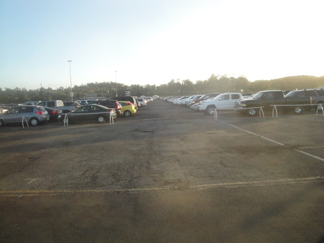
Well, the day has finally come. The day that we went to the L.A County Fair. Now due to being busy and having a hard time fitting things in my schedule, I wasn't even really planning on going to the L.A County Fair at first. This was a total last minute idea for me because F*ck it!! I wanna go to a fair, eat some deep fried food, and I'm not going a year without one of the best flat rides ever!!! Tango!!!! So at the last minute, here I go!!! And yeah. It is INSANELY crowded today. I was NOT expecting it to be this bad.
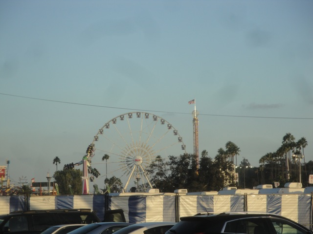
Hello again L.A County Fair. Looking good as usual. =)
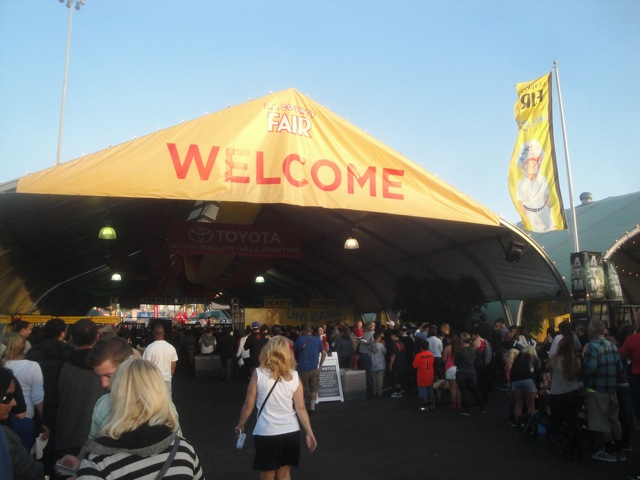
Now due to being in financial lockdown for all of my expenses for next years travel plans, I couldn't really spend much money and go on many rides.
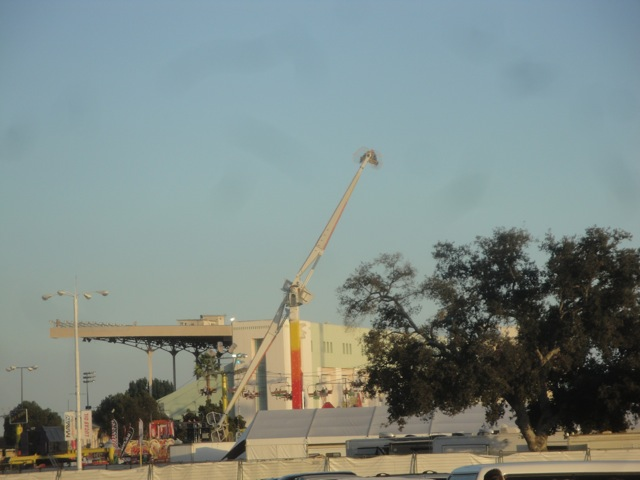
Still one of the best flat rides out there.
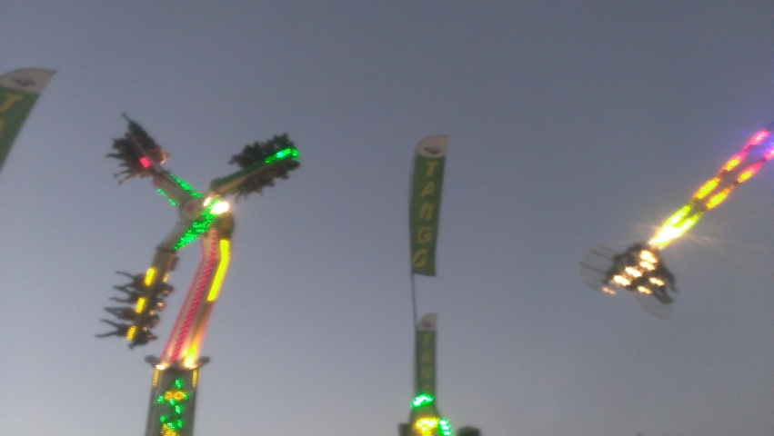
Speed vs. Tango!!!! FIGHT!!!!!
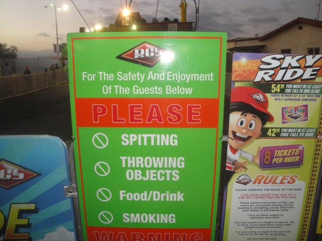
Yes Skyride riders. Please spit on me and throw all your crap at my head. I really appreciate it.
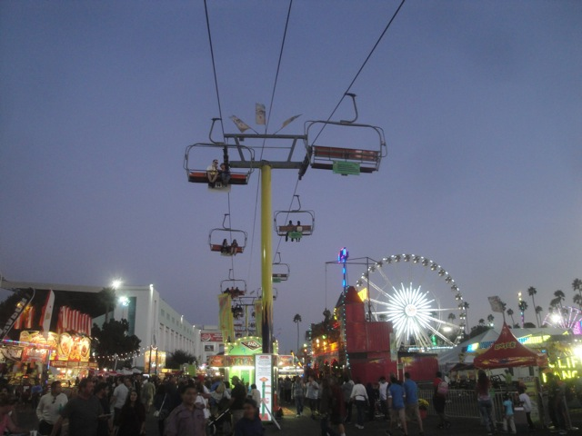
"I WAS BEING SARCASTIC YOU F*CKING MORONS!!!! Grr, I hate people."
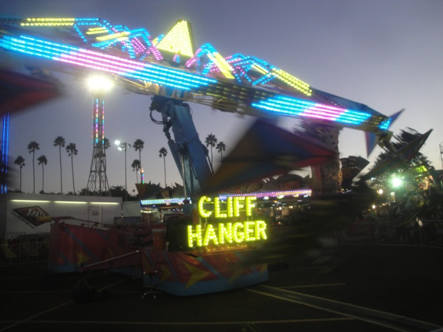
Meh. Cliff Hanger. Cliff Jumper. Close enough.
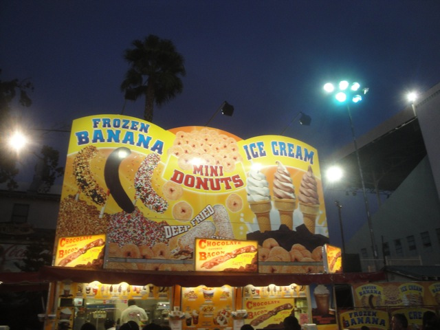
"Am I dead from a heart attack yet?"
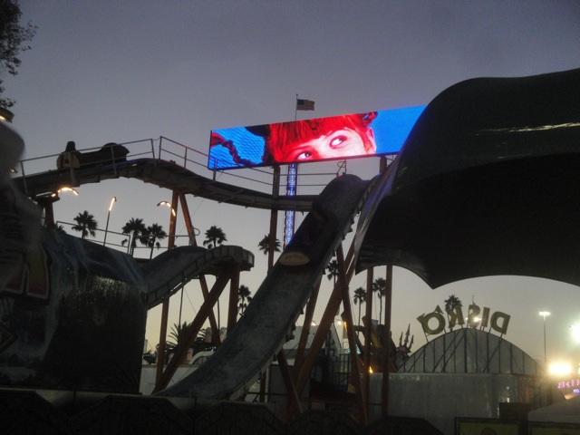
Just want to remind you all to not drink the water.
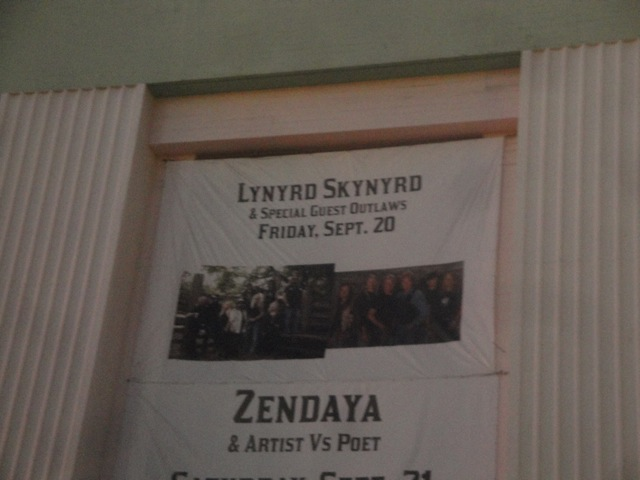
Seeing Lynyrd Skynyrd would've been nice, but I'm stripped for cash and I've already seen Big Bad Voodoo Daddy and Primus this year, and Andrew W.K is coming up soon. I'm good.
 This year's deep fried food, Deep Fried Klondike Bar.
This year's deep fried food, Deep Fried Klondike Bar.
 It was really freaking good, though I wish it was easier to eat.
It was really freaking good, though I wish it was easier to eat.
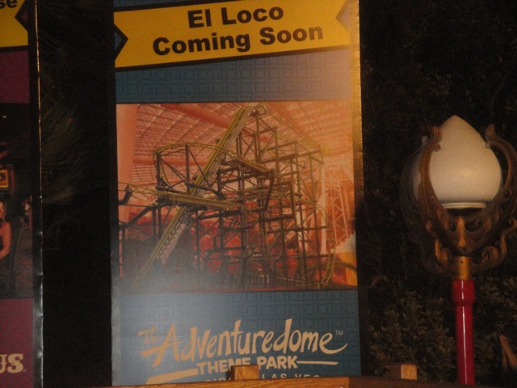
God Dammit!!! Stop making me go back to Las Vegas!!!
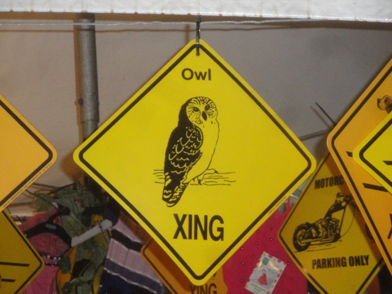
Alisa, this is for you.
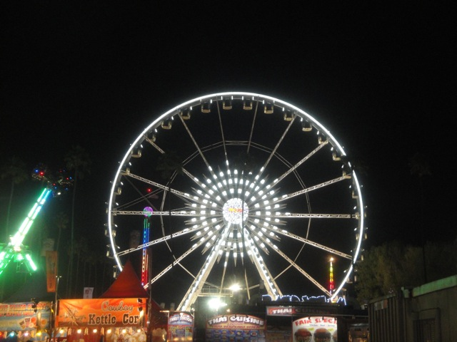
Ooh!!! Look at the pretty colors!!!
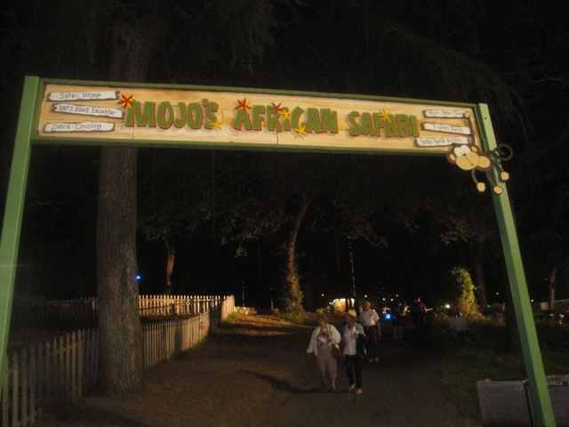
All right!!! Time for more of Mojo's Monkey Mania!!!
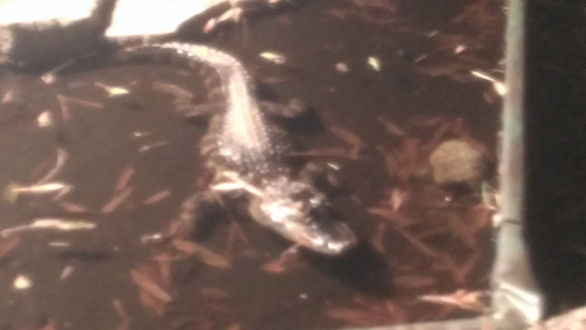
See you later, Alligator.
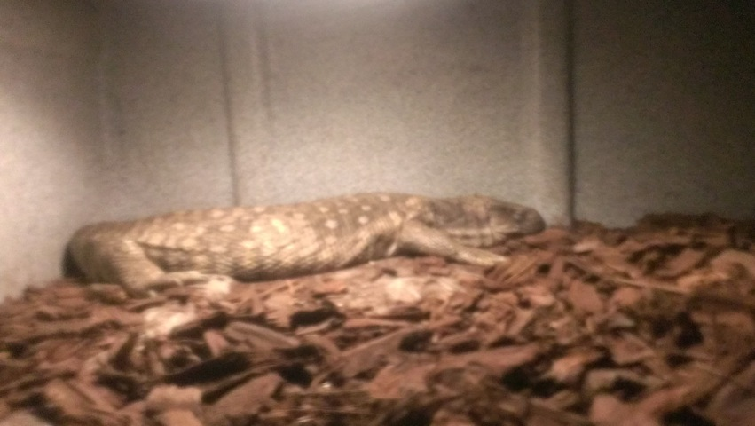
Deep fried Lizard anyone?
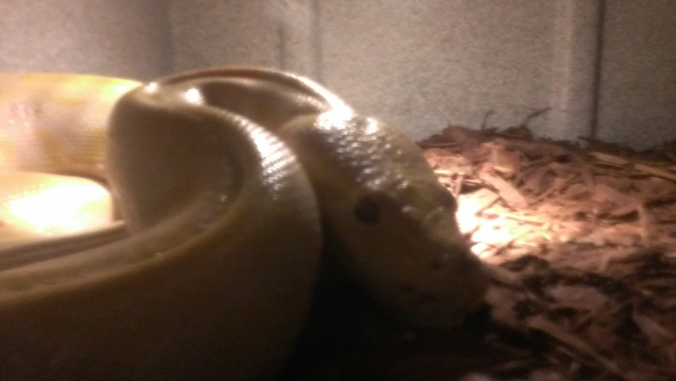
Hey everyone afraid of snakes. I'm here just for you.
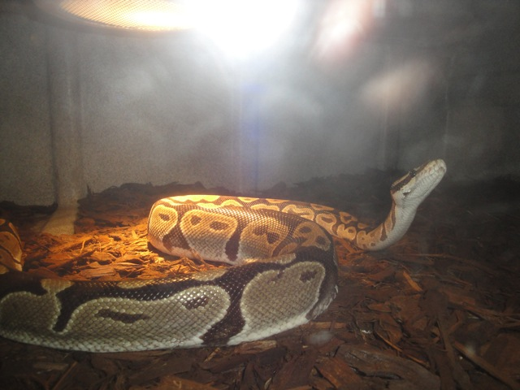
"Why? Why do you humans hate me? What are you afraid of me for? You're making me sad now." =(
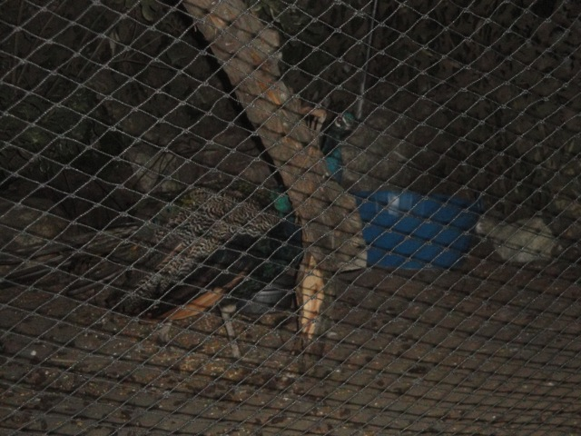
If the male is called a peacock, does that make the female a peac*nt? (Yes, I know the answer is no. It's a peahen. Don't be such a lameass about it.)
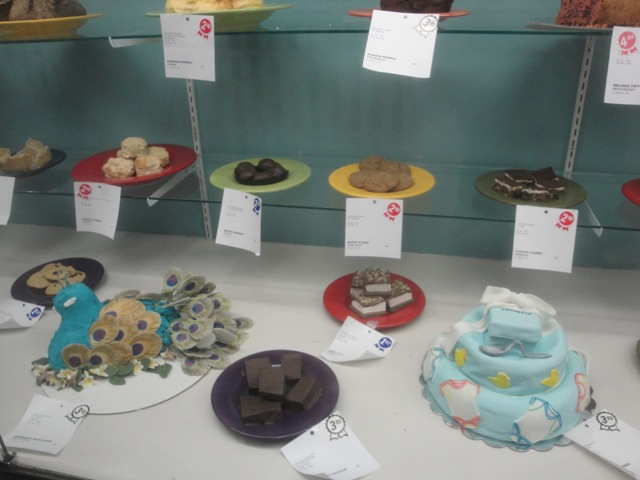
God Dammit!!! Why did I go in here!? Now I'm hungry!!!
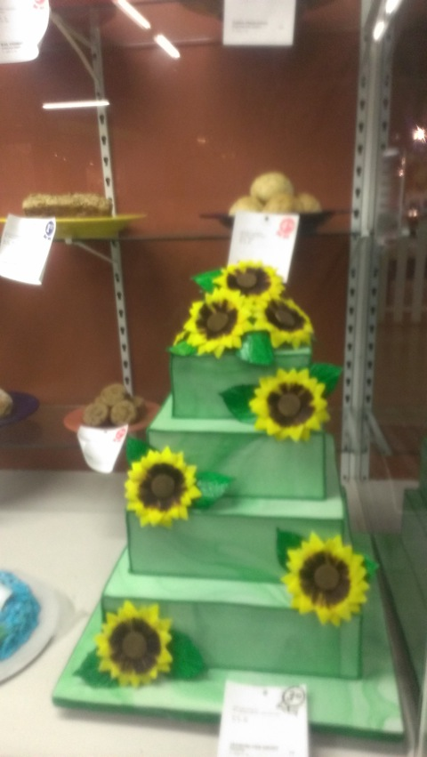
Before you become impressed, realize that this is not a cake, but rather just sugar art.
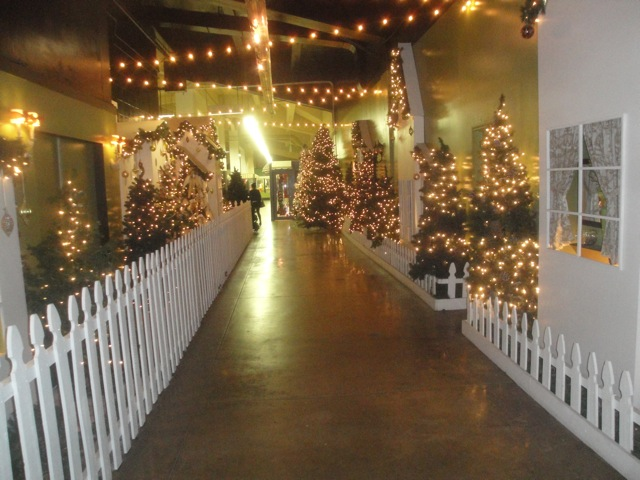
Dammit!!! Christmas isn't for another 2 months!!! Take that all down!!!
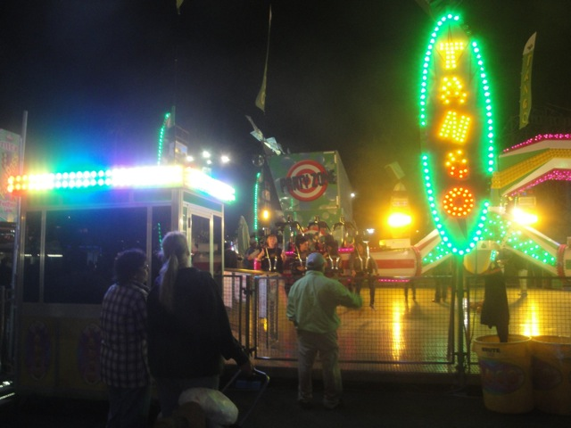
Broke or not, I can't leave this fair without some more hot action from Tango.
 This flat ride just gets crazier and crazier each time I ride it. =)
This flat ride just gets crazier and crazier each time I ride it. =)
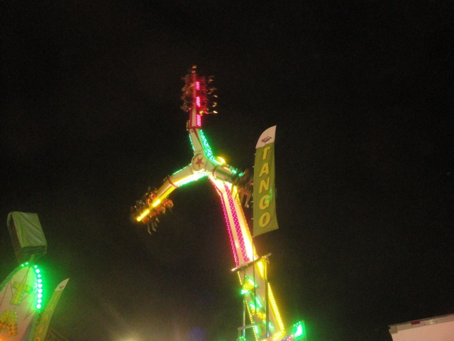
And yeah. That was my L.A County Fair visit for this year. As you can see, it was MUCH smaller than my plans from previous years. But I still had fun and got on my favorite rides. So that's all good. Hoping to make next year a much grander visit to the Fair.
Home
|